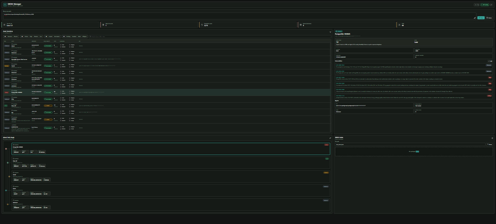
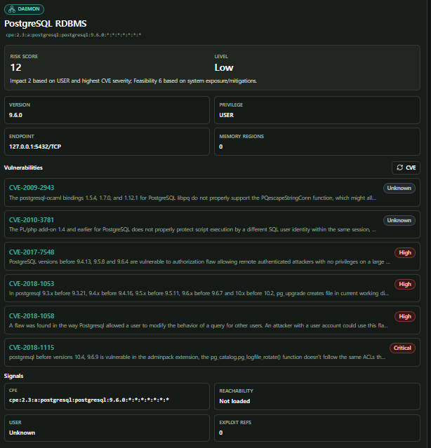

실행 중인 서비스, 바이너리, 패키지, 취약점을 연결해서 단순 CVE 목록이 아닌 실제 공격 가능한 표면을 우선순위화하고 싶다.
SBOM 목록을 실행 중인 자산, CVE 인텔리전스, 접근 가능성, TARA 위험도로 연결하는 보안 분석 프레임워크
Kernel / Daemon / Binary / Package / 3rd-party
core, parser, active TODO 기능 테스트 통과
FastAPI 기반 scan, package, history endpoint
위험 대시보드, 그래프, 상세 분석, SBOM 업로드
실행 중인 서비스, 바이너리, 패키지, 취약점을 연결해서 단순 CVE 목록이 아닌 실제 공격 가능한 표면을 우선순위화하고 싶다.
외부에 열린 포트가 어떤 프로세스와 바이너리에서 왔는지 확인하고, 패치 전후 위험 변화까지 비교하고 싶다.
서비스/바이너리/패키지를 연결해 실제 공격 경로를 찾는다
외부 노출 자산과 패치 전후 위험 변화를 비교한다
probe 결과를 하나의 scan result로 합치고, 모델/위험도/조치 추천/히스토리를 API가 사용할 수 있게 표준화한다.
kernel, daemon, binary, package, intelligence 기능을 분리해 확장성과 테스트 가능성을 확보한다.
자산 inventory, 상세 패널, attack path graph, SBOM upload를 통해 분석 결과를 시각적으로 확인한다.
CLAUDE.md, progress.json, TODO_TRACKING.md, SESSION_LOG.md로 설계/진행/검증을 repo 안에 축적한다.
core foundation, parser, active TODO feature를 pytest로 반복 검증한다.
분석, TODO reconciliation, 제작 workflow를 프로젝트 내부에 보존한다.


NVD API rate limit
외부 API 의존성을 줄이기 위해 cache/offline-friendly provider가 필요함.
FastAPI JSON recursion
Pydantic 모델과 jsonable encoding을 명시적으로 관리해야 함.
TODO drift
progress.json을 active scope의 single source of truth로 유지해야 함.
CVE count 한계
실제 위험은 CVE 개수보다 exposure, reachability, mitigation으로 결정됨.